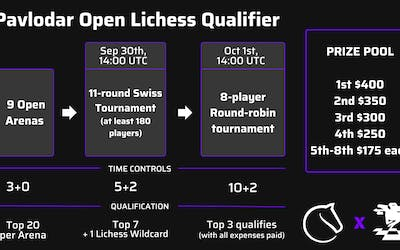
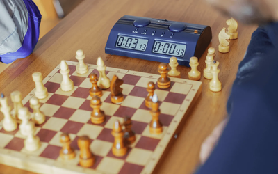
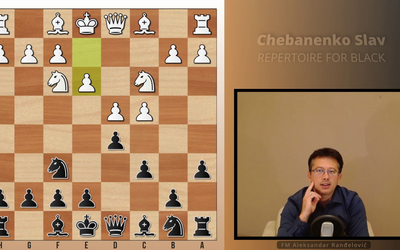

Quick pairingLobbyCorrespondence
1+0
Bullet
2+1
Bullet
3+0
Blitz
3+2
Blitz
5+0
Blitz
5+3
Blitz
10+0
Rapid
10+5
Rapid
15+10
Rapid
30+0
Classical
30+20
Classical
Custom

Livaic Wins the Pavlodar Qualifier!
GM Avetik_ChessMood
Analyzing Blitz Chess Games: Why? And How to Do it!
FM mizant83
Chebanenko Slav introduction (video)
Leaderboard
More »| GM ARM-777777 | 3200 | |
| GM muisback | 3020 | |
| GM Drvitman | 2951 | |
| Apodex64 | 2538 | |
| GM RebeccaHarris | 2655 | |
| NM blitzbullet | 2757 | |
| GM Zhigalko_Sergei | 2780 | |
| GM Zhigalko_Sergei | 2662 | |
| GM Zhigalko_Sergei | 2646 | |
| neverplayfastanti | 2440 | |
| LM fast-tsunami | 2486 | |
| catask | 2748 | |
| chess_fighter09 | 2492 |